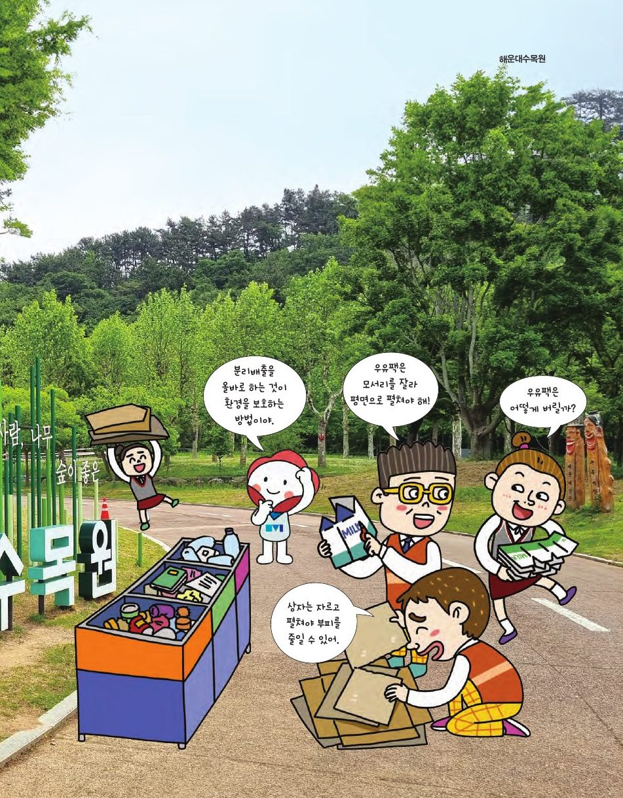

우유팩은 모서리를 잘라 펼쳐서 버려야 해요. 자르는 모서리에 따라 전개도 모양이 달라져요. 정육면체와 정팔면체의 전개도가 똑같이 11가지인 이유를 찾아봐요.
★ 이 단원에서는 — 정육면체와 정팔면체의 전개도 수가 같은 이유를 설명할 수 있다.

📍 해운대수목원격자에 정사각형 6개를 색칠해 전개도를 만들어 보세요. 접어서 정육면체가 되면 아래 11가지 중 하나에 ✓가 붙어요. 11가지를 모두 찾아보세요!
전개도에서 면 6개가 붙어 있는 변은 5개 → 모서리 12개 중 7개를 잘라요 (= 모서리 수 − 면 수 + 1). 정팔면체: 12 − 8 + 1 = 5개. 사각뿔: 8−5+1=4, 오각기둥: 15−7+1=9.
접어 보지 않고도 알 수 있어요. 정육면체는 평행한 면이 세 쌍. 꼭짓점을 공유하는 면은 이웃하는 면이니 서로 다른 글자, 접었을 때 평행한 면은 같은 글자! 같은 글자가 3개면 전개도가 아니에요.
각 면의 중심을 꼭짓점으로 하는 새 다면체를 쌍대 다면체라고 해요. 정육면체 안에 정팔면체를, 정팔면체 안에 정육면체를 그려 보세요(드래그로 회전).
아르키메데스 다면체의 쌍대를 카탈랑 다면체라고 해요. 십이이십면체(꼭짓점 30, 면이 정삼각형·정오각형)의 쌍대는 합동인 마름모 30개로 된 마름모삼십면체. 마름모의 네 꼭짓점에 모인 면이 3, 5, 3, 5개인 것이 (3,5,3,5) 배열과 대응돼요. 부산수학문화관 포토존에서 13종의 쌍대를 모두 볼 수 있어요.